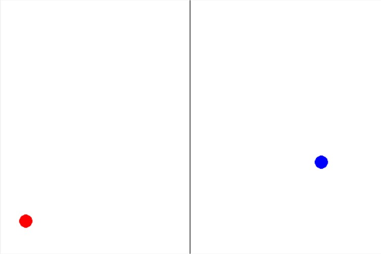
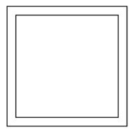
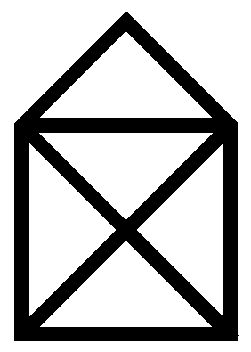

Nakreslite v programe Python pomocou knižnice tkinter kruh s náhodnými súradnicami x a y. Ak sa tento kruh nachádza na ľavej polovici obrazovky, nech je červenej farby a ak na pravej, tak modrej farby.
Možnosť získať 2 bonusové body.
Nakreslite v programe Python pomocou knižnice tkinter dva štvorce. Prvý z nich bude mať náhodnú šírku a druhý bude doňho vpísaný tak, že medzera medzi nimi bude 10.
Možnosť získať 2 bonusové body.
Nakreslite v programe Python pomocou knižnice tkinter domček ako na obrázku nižšie. Nakreslite ho jednou čiarou, čiže iba jedným príkazom create_line.
Možnosť získať 2 bonusové body. Termín akceptácie riešení je do 21.5.2017.
Napíšte program, ktorý si od užívateľa vypýta celé dvojciferné číslo. Skontrolujte, či zadal číslo správne a ak áno, vymente cifry tohoto čísla.
Input: 89 ... Output: 98
Input: 17 ... Output: 71
Input: 20 ... Output: 2Možnosť získať 2 bonusové body. Termín akceptácie riešení je do 23.4.2017.
Vytvorte program, ktorý si od užívateľa vypýta 2 čísla. Zistite, či je prvé číslo deliteľné druhým. Vypíšte hlášku, informujúcu o tom, či číslo je, alebo nie je deliteľné. Svoj kód riadne okomentujte, aby bolo z komentárov jasné, čo vykonáva.
Možnosť získať 2 bonusové body. Termín akceptácie riešení je do 1.4.2017.
Vytvorte program, ktorý sa spýta užívateľa na jeho meno a vek. Vypočítajte, v akom roku dosiahne daná osoba 100 rokov. Vypíšte personalizovanú správu obsahujúcu meno užívateľa a vypočítaný rok.
Možnosť získať 2 bonusové body. Termín akceptácie riešení je do 18.3.2017.